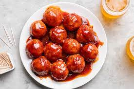

Ham Balls

Description
This is my newest, favorite meatball recipe. If you like a sweet twist, you'll like this one. The meatballs will be slightly pink inside when done because of the pork, so do not overbake them!
Ingredients
- 1 ¼ pounds ground smoked ham
- 1 pound ground pork
- 1 pound lean ground beef
- 1 cup milk
- 2 eggs
- 1 ½ cups graham cracker crumbs
- 1 (10.75 ounce) can tomato soup
- ¼ cup cider vinegar
- 1 cup packed brown sugar
- 1 teaspoon mustard powder
Steps
- Preheat oven to 350 degrees F (175 degrees C).
- In a large bowl, combine the ham, pork OR sausage, and the ground beef. Stir in the milk, eggs and graham cracker crumbs and mix well. Form into large balls about 2 inches in diameter and place them in a 9x13 inch baking dish.
- In a separate medium bowl, combine the soup, vinegar, brown sugar and mustard powder. Mix well and pour over the meatballs.
- Bake at 350 degrees for 1 hour or until internal meat temperature reaches 160 degrees F (73 degrees C).